プレイヤーガイド 十二章の説明 · 十七本の実演
Desktop v12 · Native 1.0.1 · Touch v1。ゲーム表示は主に中国語、説明書は三言語です。
この説明書は Mac・Windows・iPhone・iPad・Web を対象にしています。同じゲームシリーズですが、配布物、バージョン番号、画面、セーブ形式はそれぞれ異なります。2026-09-29 時点のソースコードと配布ファイルに基づく説明です。
端末・版
配布形式と起動方法
読むページ
Mac・Python デスクトップ版 v12
ゲームフォルダーの 启动游戏.command をダブルクリック。初回準備には対応する Python が必要
Mac の導入 → 操作
Windows・Python デスクトップ版 v12
Windows x64 用 ZIP を完全に展開し、2048.exe を開く
Windows の導入 → 操作
iPhone / iPad・Native 1.0.1、build 2
SwiftUI のソースプロジェクト。Xcode と iOS SDK でビルド・署名して導入
App の概要 → 全九章の原生版説明書
ブラウザー・Touch v1
独立した Web / PWA 版。Safari からホーム画面に追加可能
Web 版の説明
Windows パッケージの対象は Windows 10 / 11 の Intel・AMD x64 PC です。Mac は Apple Silicon の開発機で動作確認しています。他の Mac は依存関係と実行環境の確認が必要です。原生版の設定は iOS / iPadOS 16.4 以上を対象としていますが、この環境では iOS ビルド・署名・端末検証が未完了です。ソース一式はそのままインストールできる IPA ではありません。ホーム画面に追加した Web 版も別の版です。
機能
Mac / Windows v12
Native 1.0.1
Touch v1
六つのモード・クラシックを先頭に配置
あり
あり
あり
ヒント・自動プレイ・取り消し／やり直し
あり
あり
あり
自動分析コーチ
C キー
同等のデスクトップ操作なし
同等のデスクトップ操作なし
通常の直近 100 操作リプレイ
R キー
なし。レスキューのルート比較はあり
あり
ゲーム内 JSON 読み込み／書き出し
なし。ファイルをコピー
あり
あり
P で撮影・F で全画面
あり
OS の機能を使用
ブラウザー・OS の機能を使用
保存場所
ローカルファイル
App のサンドボックス
サイトのブラウザーストレージ
三言語に対応するのは説明書 です。現在のゲーム表示は主に中国語で、英語・日本語の説明にも操作ボタンの中国語名を併記しています。端末間の自動クラウド同期や共通オンラインランキングはありません。異なる版のセーブは互換ではありません。Mac と Windows の同じ v12 はファイル移行手順 で移せます。
対応する版を導入し、操作とルールから始めてください。遠征の数値は第 4 章、更新・引っ越し前のバックアップは第 6 章です。第 11 章には解答があるので、自分で挑戦してから開くことをおすすめします。
オフラインで読むにはフォルダー全体を保持し、docs/index.html で言語を選びます。検索対象はその言語の十二章です。原生版の九章には別の検索があります。言語を切り替えても同じ章を開きます。GIF は最初は静止画で、再生ボタンか MP4 プレイヤーで動きを確認できます。説明書を読むだけでゲームの進行が変更・送信されることはありません。
デスクトップ版の始め方と操作
この章は Mac / Windows のデスクトップ版 v12 用です。両 OS でゲーム内の操作は共通です。
最初の一局
起動すると「选择玩法」（モード選択）が開きます。最初の「经典与挑战」ページでは左の大きなカードがクラシックです。
「经典」を選びます。上部に得点、中央に 4×4 の盤面があります。
矢印キー、WASD、または盤面上のマウスドラッグで動かします。盤面全体が動き、個別のタイルをつかむ操作ではありません。
同じ数字を合体させ、空きマスを残します。まず手動で数手遊んでからヒントを試してください。
左上のモード名か B でロビーへ。「精选玩法」に遠征とレスキューがあり、「继续当前局」で現在の盤面に戻ります。モードごとに進行を保持します。
キーボード一覧
キー
対局中の動作
矢印 / WASD
スライド。AI から手動操作に戻れる
Space
自動プレイ開始／停止
Z
取り消し
Shift+Z / Y
やり直し
H
ヒントを依頼
Enter
AI が一手進める
C
コーチの切り替え。実際の分析は補助使用扱い
R
リプレイ
B
モード選択
N
現在のモードをやり直す。確認が出た場合は内容に従う
T / M
明暗／音の切り替え
F / P
全画面／画像保存
F1
ルールと操作のヘルプ
Esc
状況に応じてパネルを閉じる、全画面解除、停止
リプレイ内では ← / → が前後のフレーム、Home が先頭、End が現在の最終フレーム、Space が再生／停止です。キー操作の前にゲームウィンドウを選択してください。マウスでも各ボタンを押せます。デスクトップのタッチ操作は OS と SDL の入力機器対応に依存し、すべてのタッチ PC で検証したものではありません。
取り消し・リプレイ・再挑戦
取り消し は盤面、得点、手数、乱数状態を戻します。やり直し は取り消した操作を復元します。取り消した後に別の手を選ぶと分岐し、元の分岐はやり直せません。直近 100 操作まで保持し、保存済み履歴は再起動後も利用できます。補助使用の印は取り消しでは消えません。
リプレイ は履歴の閲覧だけです。原局重试 は固定パズル・レスキューの再挑戦、新开一局 はそのモードの進行を置き換える操作です。他のモードは保持します。デイリーの再開局は現在の日付の課題をやり直します。今日の課題へはロビーから入ってください。
設定と表示
右上の丸い設定ボタンには AI の品質、速度、明暗、効果音、アニメーション、全画面、記録、遊び方などがあります。AI の思考時間と自動プレイの速度は別の設定です。「冲分」は一手ずつのアニメーションを省きます。動きを見る場合は通常または低速とアニメーション有効を選びます。
P の画像は端末の exports フォルダー へ保存され、クリップボードではありません。保存に失敗した場合はメッセージを表示します。同じ秒の連続撮影でも別名を使います。外付けディスクを外す前に、正常終了してセーブの完了を待ってください。
デスクトップ版のモードと得点
合体の基本
4×4 の盤面全体を一方向へ動かし、隣り合う同じ数字を倍の数字に合体させます。その手で合体したタイルは、同じ手の中では再合体しません。左へ動かした例です。新しいタイルが出る前の状態を示します。
移動前
移動後
加点
2, 2, 2, 2
4, 4, 0, 0
8
2, 2, 4, 0
4, 4, 0, 0
4
4, 0, 4, 4
8, 4, 0, 0
8
有効な移動後は通常、空きマスに 2（90%）または 4（10%）が出ます。動かない方向は手数を消費せず、出現も乱数の進行もありません。遠征では能力によって得点・出現規則が変わります。満杯でも隣り合う同数があれば続けられます。
クラシックとデイリー
クラシックは手数無制限です。2048 に達しても続けられ、合法手がなくなると終了します。合体した数字が基本点になり、8+8→16 なら 16 点です。
デイリーは日付に基づくシードを使います。同じ日付と操作順なら出現を再現できますが、操作が異なれば同じ盤面にはなりません。今日の課題はロビーから開きます。再開局は現在の課題の日付を維持します。保存済みの直近七日分を保持し、古い日付を選ぶ画面やオンライン順位表はありません。
60 手スプリント
有効な 60 手で高得点を目指します。途中で動けなくなると早期終了します。取り消しは残り手数も戻し、無効な方向は手数を消費しません。手動と補助使用の最高得点は別で、クラシックの最高点には入りません。60 手を使い切っただけではレスキューを抽出せず、盤面が詰まった場合が対象です。
パズルシアター：十二章
初期盤面と乱数状態が固定され、目標は 64～2048 です。最短解は 2～5 手、上限は最短より一手多い 3～6 手です。横の欄に残り手数と次の数字を表示します。同じ手順の再挑戦では同じ出現になり、方向を変えると空きマスも変わります。
達成条件
星
補助なし・取り消しなし・最短手数以内
三つ
その他の補助なしクリア
二つ
補助使用後にクリア
一つ
各章の最高評価を保持します。同じ未完了の章を選ぶと続きから始まり、「原局重试」でリセットします。別の章を選ぶと現在のパズル盤面は置き換わりますが、星は残ります。AI 分析では確定した次の盤面、残り手数で解けるか、全手順を確認できます。解答を見る操作はネタバレになります。
レスキュー：六手で空間を取り戻す
クラシック・デイリー・スプリントが移動不能で終わると、バックグラウンドで直近最大十手を調べます。空きが 0 または 1 マスで、六手以内に三マス以上の空きを作り、移動可能な盤面に戻せる局面が候補です。乱数状態を保持して最短経路を探索し、正式なエンジンで再実行してから出題します。
独立した課題として 0 点・0 手から始め、元の敗局は元のモードに残します。再挑戦、取り消し、ヒント、自動プレイを使えます。手動・補助使用の最少手数は別々に記録します。進行中に「路线对照」を開くと補助使用となります。自分の手順または元の敗局と、検証済み解答を一手ずつ比較できます。取り消しでも補助の印は消えません。
個人の残局は直近六件まで保持し、現在の課題を残します。練習と明記した三問もあり、最短解は 3・5・5 手です。すべての敗局から出題されるわけではありません。探索には時間制限があり、未発見は「解なし」の証明ではありません。
遠征と記録の区別
遠征は六ステージの得点目標、手数制限、能力選択、能動スキルを組み合わせます。第 4 章 に詳細があります。得点はクラシックの記録とは別です。
ヒント、実際のコーチ分析、AI の一手、自動プレイは補助使用です。取り消しでは解除できません。星・得点・手数など記録形式が違うため、倍率のある遠征の得点をクラシックと直接比較できません。外部説明書の解答閲覧はゲームから検出できません。独力の挑戦と解答を知った練習を区別してください。
デスクトップ版・能力遠征の詳細
この章はデスクトップ版 v12 用です。三択の候補は生成時に固定され、画面を閉じる・再起動する操作では引き直せません。遠征の記録は突破ステージ数と得点で順位付けし、能力構成とともに上位十二件まで別に保持します。
一回の遠征の流れ
最初に「连击引擎」（コンボエンジン）、「蓄能核心」（蓄電コア）、「豪赌协议」（ギャンビット）の三つから一つを選びます。各ステージは制限手数内に、そのステージの目標点を稼ぐ形式です。上部スコアは累計、進捗バーは現在スコアからステージ開始時のスコアを引いた値 です。
ステージ
中国語名 / 日本語名
今回の目標点
基本手数
余裕のリズム I / II
1
启程 / 出発
100
26
30 / 34
2
蓄势 / 力を蓄えて
260
34
38 / 42
3
回响 / 響き
520
42
46 / 50
4
临界 / 臨界
900
46
50 / 54
5
跃迁 / 飛躍
1400
52
56 / 60
6
终章 / 終章
2200
60
64 / 68
最初の五ステージでは達成後に停止し、三択の報酬が出ます。新しい能力か、所有能力の II への強化を選びます。上限に達した能力は候補に出ません。盤面、累計点、能力、エネルギーは持ち越します。二枚以上のタイルがあれば最小値を一枚取り除いて空きを作ります。同値なら左上から行順に見て最初の一枚です。
余った手数や、目標を超えた分の得点は次ステージの進捗に繰り越しません。報酬選択時にコンボ、凝時の残り回数、クールダウン、戻す / やり直す履歴がリセットされます。第六ステージ達成で遠征クリアです。最後の一手で目標に届けばクリアを優先し、届かなければ手数切れ、または移動も能力使用もできないと失敗です。
エネルギーと能動能力
一組合体するごとに基本 1 エネルギーを得て、最大 12 まで保持します。蓄電コアで一組あたりの獲得量が増えます。合体しない移動では増えません。エネルギーは遠征だけの要素です。
能力
基本消費
操作
効果
凝时 / 凝時
5
「凝时 · 5」を押す
次の有効な移動二回で新タイル出現を止め、六手のクールダウンを設定
交换 / 交換
6
交換を押し、値の異なる二枚を選んで「确认交换」で確定する
二枚の位置を入れ替える。合体や新タイル出現はしない
どちらも移動手数を使わず 、直接の得点はありませんが、戻せる操作履歴を一件作ります。空白や同じ数字同士は交換できません。凝時には必要エネルギー、クールダウン 0、凝時中でないこと、盤面が移動可能であることが必要です。完全に詰まった盤面を凝時だけで救うことはできませんが、交換なら救える場合があります。
凝時回数とクールダウンは有効な方向移動でのみ減ります。待つ、無効スワイプ、交換では進みません。凝時中に空間還流も発動した場合、その手でも凝時を一回消費します。ステージ移行で凝時とクールダウンはリセットされます。
全能力の正確な効果
中国語名 / 日本語名
I
II
条件
连击引擎 / コンボエンジン
連続合体の段階ごとに +25%
段階ごとに +40%
二手連続から加算し、最大四段階。合体しない有効移動で途切れる
蓄能核心 / 蓄電コア
一組につき追加 +1 エネルギー
追加 +2
基本込みで一組 2 / 3。上限 12 は共通
豪赌协议 / ギャンビット
得点 ×2、4 の出現率 30%
×2.5、4 の出現率 40%
高得点と引き換えに 4 が増える
角落增幅 / コーナーブースト
四隅で合体した数値の +50%
+100%
合体後の到達位置が四隅かどうかで判定
共鸣回路 / 共鳴回路
一手で二組以上合体すると基礎点 +50%
+100%
三組・四組でも同じ倍率を一度だけ適用
空间回流 / 空間還流
一手で三組以上合体すると新タイルなし
二組以上で新タイルなし
自動効果、エネルギー不要
从容节拍 / 余裕のリズム
各ステージ +4 手
各ステージ +8 手
現在のステージにも即適用。II は合計 +8
折跃透镜 / ワープレンズ
交換の消費を 4 に
消費を 3 に
凝時は 5 のまま
凝时晶体 / 凝時クリスタル
凝時が三回の有効移動に持続
四回持続
クールダウンは六手のまま
コンボは一手の合体組数ではなく、「合体のある移動」が何手続いたかです。無効な入力は途切れさせず、合体しない有効移動は途切れさせます。能動能力はコンボを進めず、途切れさせもしません。
得点計算
基礎点を G、角の加点を C、共鳴の加点を E とすると：
一手の得点 = (G + C + E) × コンボ倍率 × ギャンビット倍率
最後に最も近い整数へ丸め、ちょうど .5 の場合は近い偶数を採用します。例えば基礎点 24、角で 8 を生成、二組以上合体し、角 I、共鳴 I、コンボ I の連続二手目、ギャンビット I がある場合は (24 + 4 + 12) × 1.25 × 2 = 100 点です。
コンボ I の一～五手目の倍率は 1、1.25、1.50、1.75、2。その後も 2 です。II は 1、1.40、1.80、2.20、2.60 で、その後も 2.60 です。
組み合わせの練習例
エネルギー重視 ：蓄電コアとワープレンズで交換の機会を増やします。12 を超える分は保持できないため、余裕のあるうちに有効な交換を考えます。
複数合体重視 ：共鳴回路と空間還流で一手二組以上を準備し、得点と空間を得ます。発動のためだけに安定した並びを崩さないことも大切です。
倍率重視 ：コンボエンジンとギャンビットで目標点へ早く近づけますが、4 の増加や連続合体の維持が難しくなります。無条件で有利になる組み合わせではありません。
報酬はその場の三択から選ぶため、理想の組み合わせが揃う保証はありません。AI はプレイ中の能力を使えますが、ステージ報酬はプレイヤーが選びます。遠征の操作例 も参照してください。
デスクトップ版の AI・コーチ・リプレイ
補助機能の選び方
機能
使い方
盤面を進めるか
H・ヒント
推奨方向、合体数、直接の加点を表示
進めない
Enter・AI の一手
一操作を AI に任せる
進める
Space・自動プレイ
連続して判断。もう一度押すと停止
進める
C・コーチ
手動操作が約 450 ms 止まると背景で分析
進めない
設定 → 查看 AI 分析
方向、予測盤面、深さ、局面数、時間を比較
予測表示では進まない。分析は補助使用
R・リプレイ
過去の操作を見る
進めない。乱数も不変
手動入力で自動プレイから操作を取り戻せます。モード変更、取り消し、停止後には古い分析結果を適用しません。起動直後はコンパイル済み探索コアの準備に数秒かかることがありますが、手動では遊べます。遠征はステージ突破で止まり、プレイヤーが能力を選びます。
思考品質と再生速度
品質
一手の時間予算
快速
約 25 ms
标准
約 100 ms
深入
約 450 ms
自适应・初期値
基準 120 ms。空きに応じて約 90～300 ms、方向が安定すれば早期終了
低速・通常・高速・「冲分」は別のプレイ速度 です。「冲分」はアニメーションを省略する設定で、探索が深くなる設定ではありません。負荷によって実時間は変わり、フレームレートの保証ではありません。観察には標準または自適応と通常速度が便利です。性能比較にはシード、品質、版、端末、試行数を揃えてください。一局の高得点だけで勝率は判断できません。
四方向分析の見方
クラシック・デイリー・スプリントの予測盤面は合体後、新タイル出現前 です。空きマスや危険度は次の一回の出現を考慮します。終了リスクはその出現直後に動けなくなる確率で、将来の一局全体の敗北率ではありません。相対評価の棒も勝率ではありません。
パズル・レスキューは乱数状態が固定されるため、新タイル込みの確定盤面と検証済み経路を表示できます。通常三モードでは未来の乱数状態を先読みしません。同盤面・同予算の分析は直近 32 件を再利用でき、「重新分析」で再計算します。
アルゴリズム
通常モードは独立プロセスで Numba によるネイティブコンパイル済み Expectimax を実行します。プレイヤーの選択は最大化し、出現は確率で重み付けし、反復深化で完了した深さの結果を保持します。行テーブル、局面キャッシュ、低確率分岐の削減、空き・並び・合体可能性などの評価を使います。二ワードの 80 ビット盤面は各セル 5 ビットで、32768 を超えても通常探索を続け、符号化は 2³⁰ のタイルまで対応します。学習済みニューラルネットではなく、最適解の保証もありません。
遠征は能力、エネルギー、凝時、交換、出現率を考慮する別の時間制限探索です。空きが多い場合は出現位置を抽出して調べます。パズル・レスキューは完全な乱数状態を含む幅優先探索で最短解を求め、エンジンで検証します。時間切れ・未発見は解なしの証明ではありません。別モードの予算や得点を同一視しないでください。
リプレイ
R で直近最大 100 操作を表示し、一手ずつ、再生、得点グラフによる位置選択ができます。現在の盤面、取り消し履歴、乱数は変更しません。遠征は報酬選択後に履歴をリセットするため、全ステージを跨ぐ再生ではありません。レスキューには元の敗局／今回と検証済み経路を比べる専用画面があります。
セーブ・バックアップ・移行・更新
保存場所
版
主セーブ・予備
画像・ログ
Mac v12
ゲーム内 data/save.json、data/save.bak
ゲーム内 exports/、起動したターミナルの出力
Windows v12
%LOCALAPPDATA%\2048-Atelier\data\save.json と同じ場所の save.bak%LOCALAPPDATA%\2048-Atelier\exports と logs
Native 1.0.1
App サンドボックス。設定で JSON を書き出し／読み込み
原生版の保存ガイドを参照
Touch v1
サイトの IndexedDB。設定で書き出し／読み込み
ブラウザー・端末・サイトごと
デスクトップ版は約五秒ごとと主要操作後に背景で保存し、通常終了時には最後の書き込みを待ちます。主セーブがない・壊れている場合は、直前の読み取り可能な save.bak を試します。予備は一世代で、無制限の履歴ではありません。重要な進行は別の場所にもコピーしてください。乱数、取り消し履歴、各モード、記録を含むため、数値の手動編集は整合性を壊すことがあります。
デスクトップ版のバックアップ
自動プレイを止め、開いているすべてのゲームを正常終了します。
Mac は Finder でゲーム内の data を開きます。Windows は Explorer のアドレス欄に %LOCALAPPDATA%\2048-Atelier\data を入力します。
存在する save.json と save.bak を一組として日付付きの別フォルダーへコピーします。
画像も必要なら exports を別にコピーします。画像から対局を復元することはできません。
コピー中はゲームを起動しないでください。旧版も終了します。新しい排他ロックに従わない旧プロセスの書き込みは防げません。2048.exe や game.py だけのコピーでは、ユーザーデータを保存したことになりません。
Mac と Windows の v12 間で移行
両方がデスクトップ v12 であることを確認し、両端の現在のデータをバックアップします。
移行先を一度起動・終了して保存フォルダーを作ります。
両端を終了した状態で、移行元の主セーブと予備を一組で移行先の data にコピーします。
移行元に save.bak がない場合は、移行先の古い予備を先に別のバックアップ先へ移します。壊れた主セーブから無関係な古い局へ戻ることを避けます。
起動し、モード、点数、盤面、取り消し履歴を確認します。これは移行先を置き換える 操作で、二台の成績を統合しません。
Windows の旧フォルダーからの自動移行は、ユーザーデータに save.json と save.bak の両方が存在しない場合だけ です。片方でもあれば自動上書きせず、元ファイルも削除しません。移行させるために削除を繰り返すのではなく、上記の手順で明示的に移してください。
更新と復旧
Windows 更新では旧ウィンドウを閉じ、新しいゲームを別フォルダーへ完全に展開します。ユーザーデータは残します。Mac のソース更新では data、exports、その Mac の環境を保持します。仮想環境は別の PC へそのまま移す用途に向かないので、導入章に従って再作成してください。
予備から復元したと表示された場合は盤面を確認し、現在のファイルも保存します。両方壊れている場合は原本を診断用に残し、自分で保管した正常なコピーを使います。有効なコピーなしでの復旧は保証できません。容量不足、読み取り専用、ディスクの切断は保存失敗の原因になります。表示された問題を解決して正常終了してください。
別の版との互換性
Native、Touch、Python のセーブは異なる形式です。拡張子が .json でも相互に読み込めません。原生・Web の読み込みは、その版の現在の進行を置き換えます。移行先を先に書き出してください。自動 iCloud・プラットフォーム間同期はありません。App 削除、サイトデータ消去、ブラウザー変更の前に対応する版でバックアップします。
macOS の導入とトラブル対処
Mac で遊ぶ版
Python デスクトップ版 v12 を使います。現在の配布はソースフォルダーと起動スクリプトで、独立した .app パッケージではありません。iOS/Lumina.xcodeproj は iPhone / iPad 用です。説明書内の SwiftUI ホスト表示も、デスクトップ版の代わりとなる Mac 配布アプリではありません。
以下は ~/2048-Atelier を例にしています。実際のゲームフォルダーに読み替えてください。初回は Mac 上で Python 環境を作成し、他の端末の仮想環境はコピーしないでください。
準備済みの Mac
外付けディスクを接続し、ゲームフォルダーを開きます。
启动游戏.command をダブルクリックし、ウィンドウと AI の準備を待ちます。ロビーでクラシックまたは続きから開始します。起動時の問題はターミナルに表示されます。
通常終了し、保存完了後にディスクを取り出します。
ターミナルからは次でも起動できます。
cd ~/2048-Atelier
.venv/bin/python game.py
別の Mac で初回準備
64 ビット Python 3.12～3.14 と、固定された依存関係の導入成功が必要です。ターミナルで実際のゲームフォルダーへ移動し、一行ずつ実行します。
python3 --version
python3 -m venv .venv
.venv/bin/python -m pip install -r requirements.txt
.venv/bin/python game.py
最初の出力を確認します。python3 が対応版でなければ、インストール済みの対応 Python を環境作成に使います。初回ダウンロードには通信が必要ですが、準備後のゲームと AI はサーバーに依存しません。依存版の一覧 を参照してください。ゲーム専用の .venv を使い、sudo pip でシステム Python を変更する必要はありません。
コピーしてきた .venv が動かない場合は、ゲーム終了後に旧環境を改名して保持し、この Mac で新しく作ります。data は残します。CPU アーキテクチャが変わる場合も再作成します。実行確認した開発機は Apple Silicon Mac で、すべての Intel Mac・macOS 版を実機確認したわけではありません。
起動時の対処
症状
確認・対処
ファイルがない
ディスクの接続とフォルダー名を確認。空白を含むパスは引用符で囲む
ダブルクリックで動かない
ターミナルで /bin/zsh "启动游戏.command" を実行し、最初のエラーを見る
Python やパッケージがない
バージョン確認後、.venv/bin/python -m pip で requirements を導入
.venv/bin/python が動かない他の PC 由来か確認。旧環境を保持して作り直す
別の起動があると出る
元のウィンドウを探し正常終了。動作中のロックは削除しない
手動は動くが AI が準備中
初期化を待つ。止まったままならターミナル出力を保存
文字が欠ける
fonts/ と全リソースを保持。システムの苹方は再配布せずローカルで読む
保存・撮影に失敗
フォルダーの書込権限、空き容量、接続を確認。セーブは data/
ダウンロードに対する macOS の警告が出たら、配布元と整合性を確認し、OS が示す個別の開く手順に従います。システム保護を全体で無効化しないでください。起動中の旧画面には新ソースが自動反映されないため、更新後は終了して起動し直します。
Windows の導入とトラブル対処
Windows ポータブル版
対象は Windows 10 / 11、Intel・AMD x64 です。32 ビット版やネイティブ ARM64 版ではなく、ARM 上のエミュレーションも未検証です。元の配布物は 2048-v12-Windows-x64.zip です。今回の 2048-v12-Windows-x64-with-docs.zip は、同じゲーム・実行環境に全版の三言語説明書を追加しています。
Windows PC に ZIP をコピーし、右クリックの「すべて展開」でローカルフォルダーへ展開します。
展開後の 2048-Windows を開き、2048.exe をダブルクリックします。
最初の AI 準備に数秒待ちます。手動では遊べます。別途 Python を入れたり、プレイ中に通信したりする必要はありません。
クラシックで矢印操作を試し、終了・再起動して盤面が戻ることを確認します。
README.zh-CN.md / README.en.md / README.ja.md、または docs/index.html をオフラインで読めます。
runtime/、fonts/、JSON、Python ファイルを含めた全構成を保持してください。ZIP の中から起動したり exe だけコピーしたりしないでください。 Python 3.13.15 と固定依存関係を同梱しており、PC に別の Python があっても入れ替える必要はありません。
セーブは exe の横ではない
Explorer のアドレス欄に %LOCALAPPDATA%\2048-Atelier を入力します。
フォルダー
内容
data主セーブ save.json、予備 save.bak、プロセスロック
exportsP で保存した画像
logs起動ログ latest.log、自己診断 diagnostics.json
cache/numba再生成可能な AI キャッシュ。進行データではない
バックアップ・更新・移行は第 6 章 にあります。別の場所へ展開しても、ユーザーフォルダーの進行はリセットされません。
起動できないとき
完全に展開済みで Windows 10 / 11 x64 か確認します。
启动游戏.bat を開き、コンソールの最初のエラーを保存します。check-windows.bat を実行します。依存版、中文字形、十二問のパズル、三問の練習、一時セーブ、背景 AI を確認します。個人の対局は変更せず、結果を読むために画面が停止します。%LOCALAPPDATA%\2048-Atelier\logs を確認します。diagnostics.json は報告を書き出せた場合のみ作られます。依存関係の読み込みで先に失敗した場合はコンソール出力を保存します。下表で確認し、版・OS・エラー全文・再現手順を添えて報告します。
症状
対処
runtime / Python / DLL がない
元のパッケージを完全展開し直す。不明なサイトで単独 DLL を探さない
別の起動がある
元の画面へ戻る。終了で OS ロックが解除される。ファイルが残るだけではロック中とは限らない
中国語が四角になる
fonts/NotoSansSC-*.otf と fonts/OFL.txt を確認し、字体を削除しない
exe だけ失敗する
bat のコンソールと latest.log を確認。ログなしならコンソール内容を報告
AI だけ止まる
初回準備を待ち、自己診断でワーカー・Numba の問題を見る
拡大率・全画面の不具合
ウィンドウへ戻し、OS 拡大率と解像度を記録
保存・撮影失敗
ユーザーフォルダーの権限・容量を確認。システム領域への導入は不要
更新が反映されない
旧画面を閉じ、新しく完全展開した場所から起動
起動前に DPI awareness を設定しますが、全マルチモニター構成の検証を意味しません。Windows が配布元を警告した場合は元ファイルと出所を確認し、OS の個別ファイル用の処理に従ってください。保護機能の全体無効化や、管理者権限での強制起動は不要です。
Windows ソース版
ポータブル版ならこの節は不要です。64 ビット Python 3.12～3.14 が必要です。启动游戏.bat は同梱 runtime、既存 .venv の順に使い、なければ対応 Python を探して環境と依存関係を準備します。初回は通信が必要ですが、準備済みなら毎回再導入しません。
Python 3.13 を導入済みの場合、ゲームフォルダーのコマンドプロンプトでの例です。
py -3.13 -m venv .venv
.venv\Scripts\python.exe -m pip install --only-binary=:all: -r requirements.txt
.venv\Scripts\python.exe game.py
検証範囲
元のパッケージでは ZIP CRC、依存ファイルの SHA-256、135 個の x64 PE と必須 DLL の参照を確認しています。v12 検証記録 を参照してください。Windows 実機では未実行です。 静的確認は画面、音、GPU、拡大率、実画面のフレームレート検証ではありません。デスクトップ動画は同じ Python ゲームを Mac で動かしたもので、Windows 録画ではありません。
iPhone・iPad・Web 版
iPhone と iPad：共通の原生プロジェクト
Native 1.0.1（build 2） は Swift / SwiftUI の Universal App ソースで、WebView ではありません。iPhone と iPad は同じ規則とコードを使い、幅に応じて配置を変えます。最低配布対象は iOS / iPadOS 16.4、ツールチェーンは Swift 6.0 以上、言語モードは Swift 5 です。最低 OS とコンパイラー要件は別のものです。
ゲーム内 iOS/ に Lumina.xcodeproj、コア、画面、リソース、テスト、説明書があります。署名済み IPA、TestFlight 招待、App Store 公開版は含みません。 Mac に完全な Xcode と対応 iOS SDK を入れ、プロジェクトで自分の Team と Bundle Identifier を設定し、端末を選んで Run します。Command Line Tools だけでは iPhone へ導入できません。導入・署名・ビルド・端末確認 に手順があります。
原生版の操作
起動時はクラシックです。上のモード名から切り替えます。盤面内をスワイプし、戻る矢印で取り消し、電球でヒント、自動プレイで開始／停止します。三点メニューにはやり直し、再開局、パズル・レスキューの選択があります。設定には明暗、音、触覚、動きを減らす、AI 品質、JSON バックアップがあります。
外部キーボードは矢印と WASD に対応します。デスクトップの Z/R/C/P は適用しないでください。動作中に最大二回のスワイプを待機でき、メニュー・背景移行・手動への切り替えで待機入力を処理して AI を止めます。狭い iPhone は縦配置、広い iPad は盤面と情報を左右に置き、小さいウィンドウにも合わせます。長い説明はスクロールできます。
AI を止め、設定から JSON を「ファイル」などへ書き出します。読み込みは原生版の進行を置き換えるので、移行先を先に保存してください。Python・Touch の JSON とは別形式です。原生版はヒントを依頼した時点で補助使用になり、推奨手を実行しなくても同じです。
既存の九章をすべて保持
インストール済みなら操作章から、ソースを受け取った場合はビルド章から読みます。Mac 上のテストとレイアウト画像は、実機のタッチ、回転、Split View、背景復帰、VoiceOver、表示性能の代わりにはなりません。
Touch v1：独立した Web 版
Web 版はネイティブ App とは別の版です。Safari のタッチ操作とホーム画面への追加に対応します。ネイティブ App はこの章の前半にある導入・操作手順を参照してください。
Safari で LUMINA Web 版 を開きます。現在はアクセス制限があるため、利用権限のある Vercel アカウントでログインしてください。
初回読込完了を待ち、共有 → ホーム画面に追加を選びます。
オフライン準備後に切断してホーム画面から起動を試します。キャッシュ前はオフライン利用を保証しません。
盤面内スワイプ、方向ボタン、矢印／WASD で遊べます。
設定で JSON を書き出し、別端末の Touch 版 へ読み込みます。移行先も先に保存します。
六モード、ヒント、Worker AI、取り消し／やり直し、直近 100 操作リプレイ、レスキュー比較、明暗、音、動きを減らす設定があります。メニュー・背景・手動切り替えで自動プレイを止めます。Python 版の全キー操作はなく、AI の時間設定もデスクトップと同じではありません。
保存はサイトの IndexedDB で、予備とページ離脱時の緊急記録を持ちます。ブラウザー、端末、ホーム画面環境間で自動同期しません。サイトデータ削除、プライベート閲覧、OS の容量整理で失われる場合があるため、重要データは書き出してください。更新後も旧画面の場合は、先に保存し、接続して開き直して更新を待ちます。最初にサイトデータを消さないでください。
旧 URL から移行する場合は、先に旧サイトの設定で「导出进度」を選び、新サイトの「导入进度」で読み込んでください。ブラウザーのセーブは URL をまたいで自動移行されません。ホーム画面のアイコンも新しい URL から追加し直してください。
ソースは mobile/ です。開発用 python3 serve.py は通常 Service Worker を登録しません。携帯端末向けの公開には HTTPS が必要です。原生との規則比較、Web 自動テスト、ブラウザー配置確認は、実機のオフライン起動・触覚・システムジェスチャーの検証を意味しません。
十七本のゲーム実演
デスクトップ八本と原生九本を収録。実際のコードで動かした画像から MP4 を作り、その配布 MP4 を復号して GIF にしています。12 fps の教材で、実画面の性能測定ではありません。HTML は停止状態から再生でき、MP4 も開けます。Markdown は通常自動で繰り返します。
Mac / Windows デスクトップ v12 の操作
Mac の実際の Python / pygame 描画を SDL dummy と独立した一時セーブで記録しています。Windows と共通コードですが、Windows 実機の録画ではありません。無音で、個人セーブは使いません。
ロビー：クラシックを先頭に
クラシックのページから精选玩法へ移り、戻って開始します。対局中は B でロビーへ戻れます。
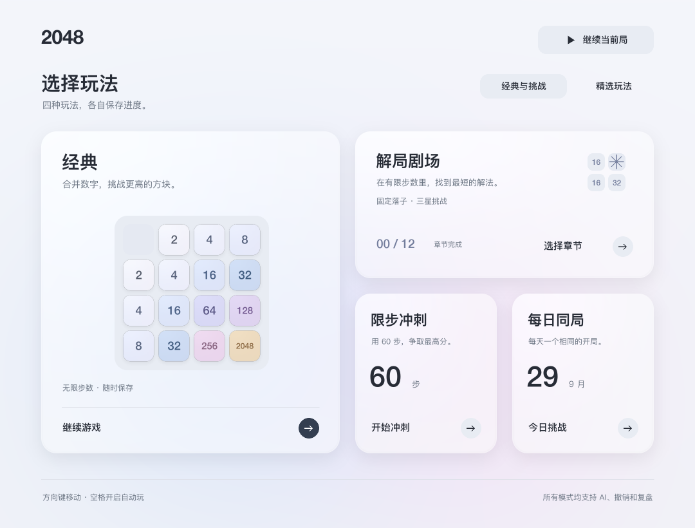
動図を再生 ロビー：クラシックを先頭に MP4 · 動画プレイヤー GIF · MP4 · 6.00 s · PNG
クラシック：移動・取り消し・やり直し
seed 42 の実際の新局で左・下・左・上・右、その後に取り消しとやり直し。盤面・得点・手数が一緒に戻ります。
動図を再生 クラシック：移動・取り消し・やり直し MP4 · 動画プレイヤー GIF · MP4 · 7.00 s · PNG
AI 分析・一手・リプレイ
実際のワーカーで分析し、左の予測、一手実行、履歴表示を行います。リプレイでは現在の盤面を変えません。
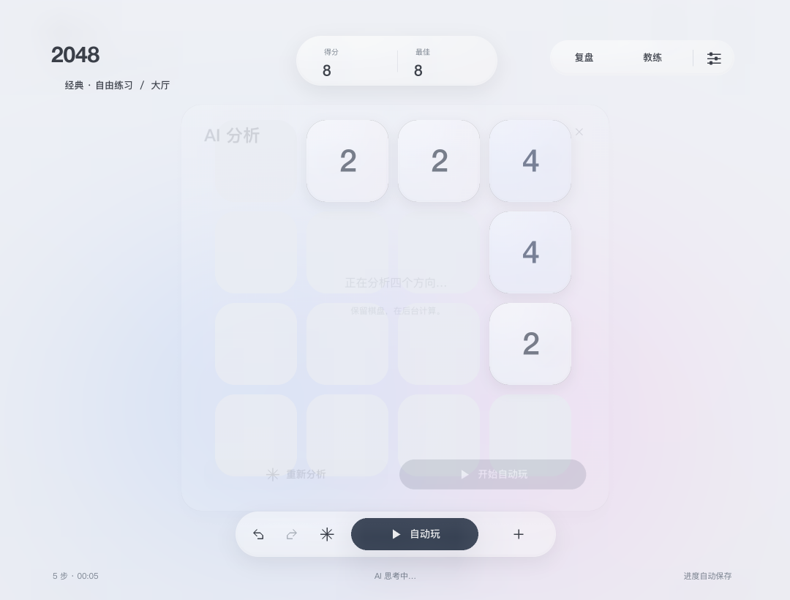
動図を再生 AI 分析・一手・リプレイ MP4 · 動画プレイヤー GIF · MP4 · 8.50 s · PNG
パズル：二手で 64
第一章を初期状態から上・上と動かし、実際に三つ星で達成します。解答を含みます。
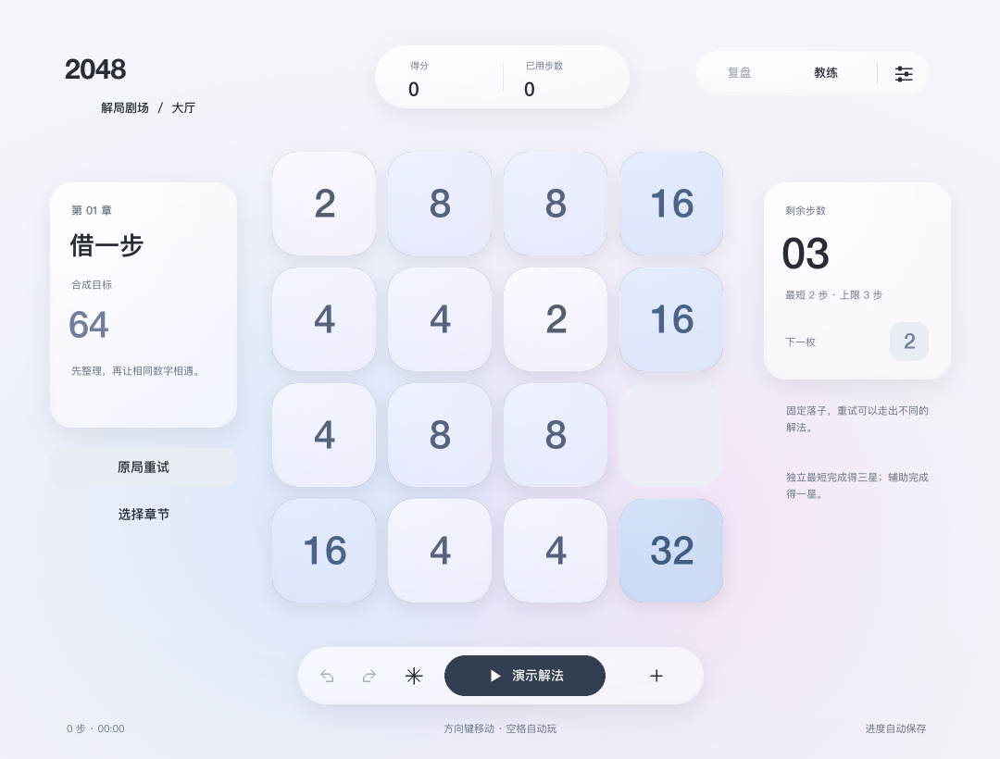
動図を再生 パズル：二手で 64 MP4 · 動画プレイヤー GIF · MP4 · 5.33 s · PNG
遠征：能力選択と充電
seed 13 の新局で蓄能核心を選び、移動とエネルギー、説明パネルを見ます。第一ステージの導入で、六ステージ全編ではありません。
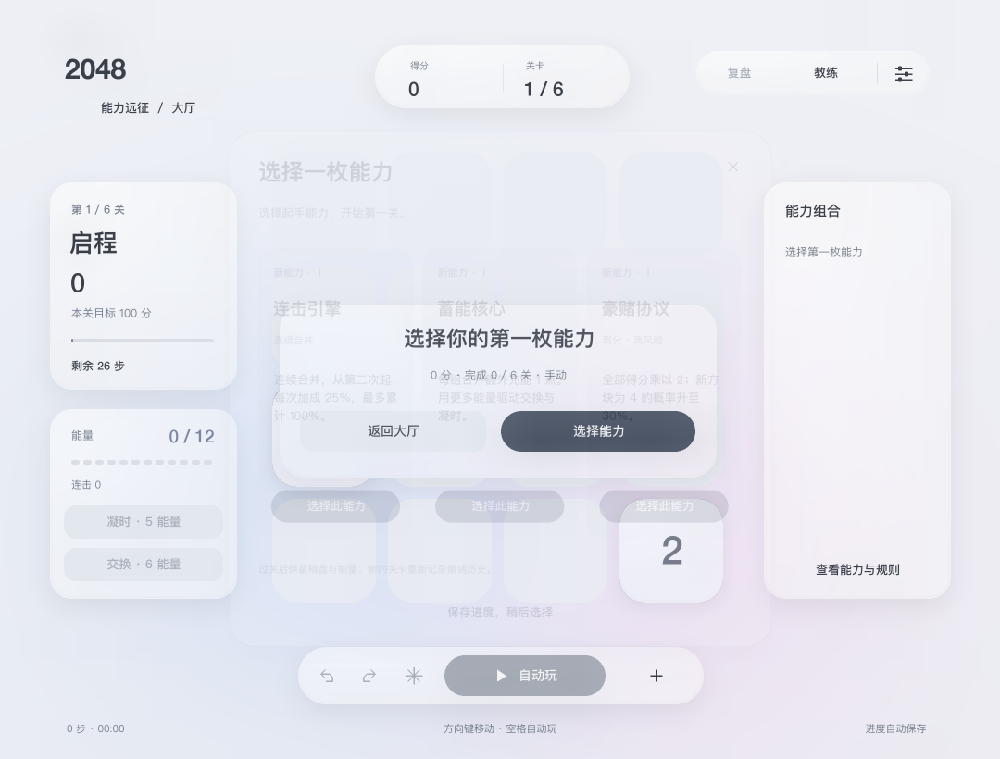
動図を再生 遠征：能力選択と充電 MP4 · 動画プレイヤー GIF · MP4 · 8.00 s · PNG
レスキュー：三手と経路比較
練習一問目を右・上・上で三空きに戻し、成功後に比較を開いて進めます。解答を含みます。
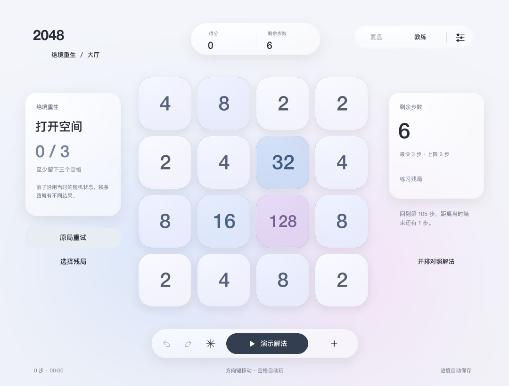
動図を再生 レスキュー：三手と経路比較 MP4 · 動画プレイヤー GIF · MP4 · 6.83 s · PNG
デイリー：固定日付と履歴
正式な daily_game で 2026-09-29 を生成し、移動・取り消し・やり直しを示します。無効な方向は手数に入りません。
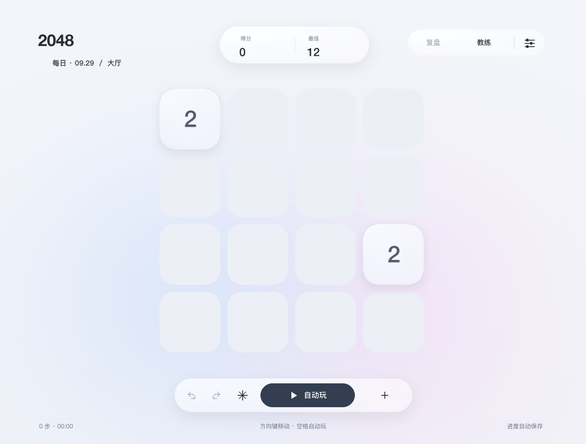
動図を再生 デイリー：固定日付と履歴 MP4 · 動画プレイヤー GIF · MP4 · 6.67 s · PNG
スプリント：残り手数を見る
seed 42 の新局を五手進め、取り消しとやり直しを行います。手数の説明で、60 手目の終了映像ではありません。
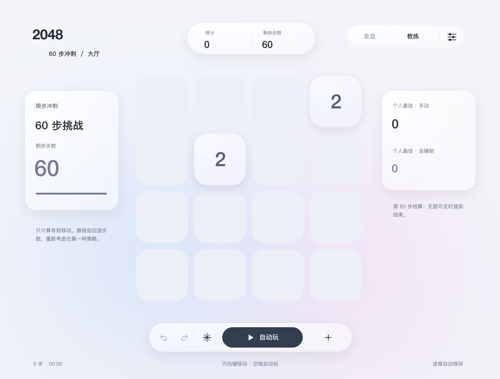
動図を再生 スプリント：残り手数を見る MP4 · 動画プレイヤー GIF · MP4 · 7.50 s · PNG
iPhone / iPad 原生版の操作（Mac ホスト表示）
九本の GIF はネイティブコードを実行して採取した動画から変換し、元の MP4 も同梱しています。環境は macOS ネイティブプレビューで、iPhone / iPad の録画や実機 FPS 検査ではありません 。下の英語帯は教材の注釈です。HTML では停止可能、Markdown では通常ループします。MP4 は H.264 形式です。HTML の動画プレイヤーを開くか、ダウンロードして再生できます。すべてローカルで、通信は不要です。
クラシック：移動・合体・出現
seed 42 で実際に進めた中盤から再開。盤面全体の移動、同じ数字の合体、得点、新タイルを確認します。方向は下の帯に表示します。
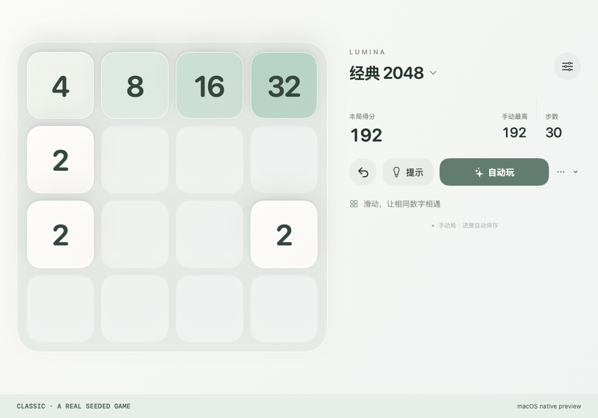
動図を再生 クラシック：移動・合体・出現 MP4 · 動画プレイヤー 最大タイルを角付近に保つ練習に。合体しない移動でも新タイルは出ます。
GIF · MP4 · 6.08 s · PNG
戻す・やり直す：同じ出現を復元
一手動かし、戻して、やり直します。盤面、点数、手数が一緒に変わります。
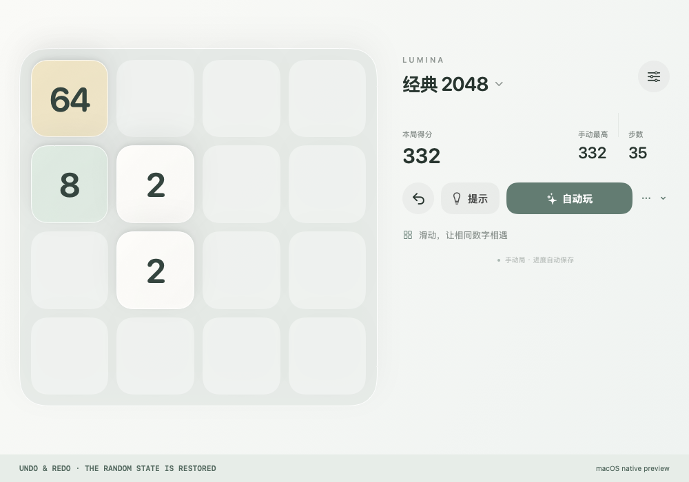
動図を再生 戻す・やり直す：同じ出現を復元 MP4 · 動画プレイヤー やり直しは三点メニュー内です。乱数状態も復元するので引き直しではありません。
GIF · MP4 · 5.58 s · PNG
AI：ヒント・実行・自動・停止
ヒントを要求して実行し、自動プレイを開始してから止めます。
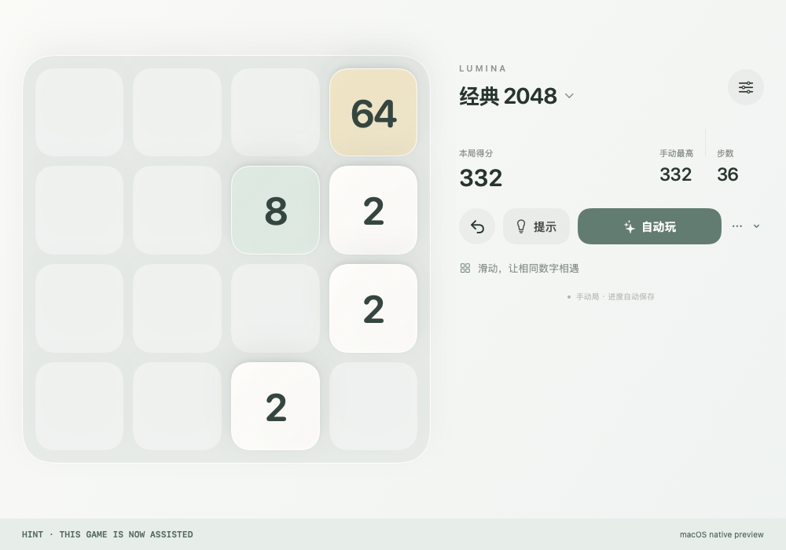
動図を再生 AI：ヒント・実行・自動・停止 MP4 · 動画プレイヤー 下部表示が手動からアシストへ変化。止めてもアシスト区分は残ります。
GIF · MP4 · 11.5 s · PNG
遠征：三択と序盤
seed 42 の新しい遠征で蓄電コアを選び、数手動かします。
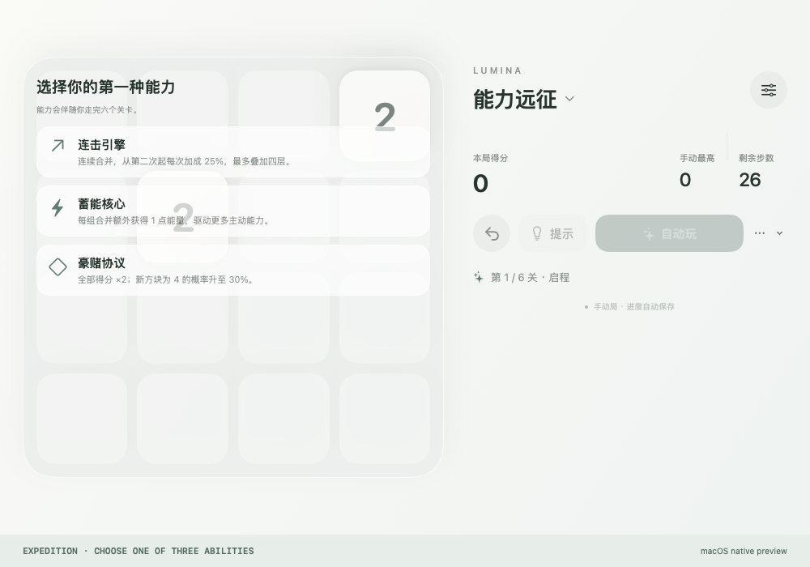
動図を再生 遠征：三択と序盤 MP4 · 動画プレイヤー 複数組の合体でエネルギーが増えます。ステージ点と累計点の違いを確認します。
GIF · MP4 · 7.25 s · PNG
遠征：凝時と交換
実際の操作で 12 エネルギーを得た状態から、凝時、異なる二枚の交換、二回の移動を実演します。
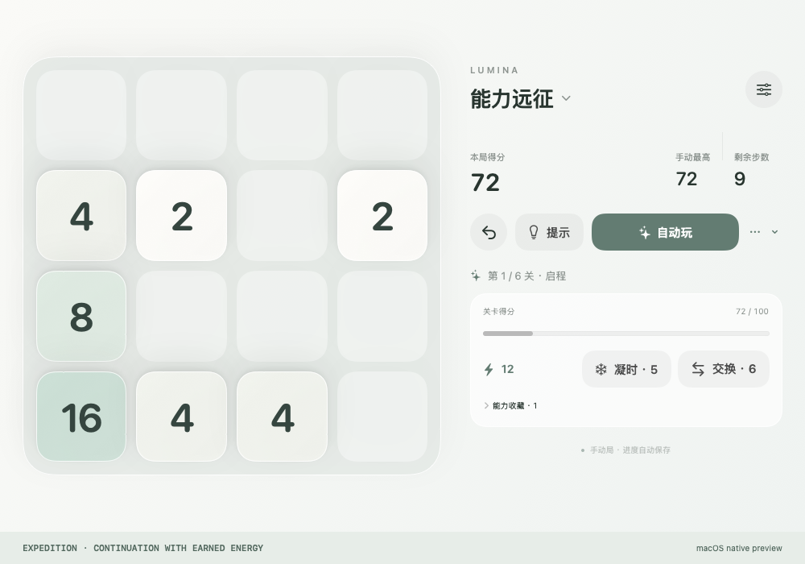
動図を再生 遠征：凝時と交換 MP4 · 動画プレイヤー 能力を使っても残り手数は変わらず、凝時中の移動では新タイルが出ません。
GIF · MP4 · 6.42 s · PNG
パズル：二手で 64
第 01 問を最初から、上、上と動かして 64 にします。
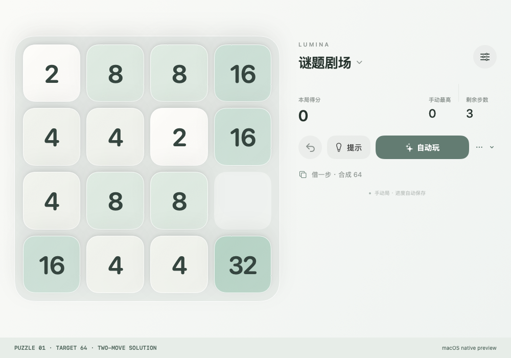
動図を再生 パズル：二手で 64 MP4 · 動画プレイヤー 解答を含みます。ヒントと戻すを使わず、星三つを取得します。
GIF · MP4 · 4.67 s · PNG
レスキュー：失敗する手と救済ルート
練習「一线生机」で元の左移動による詰みを再現。最初からやり直して、右、上、上と進めます。
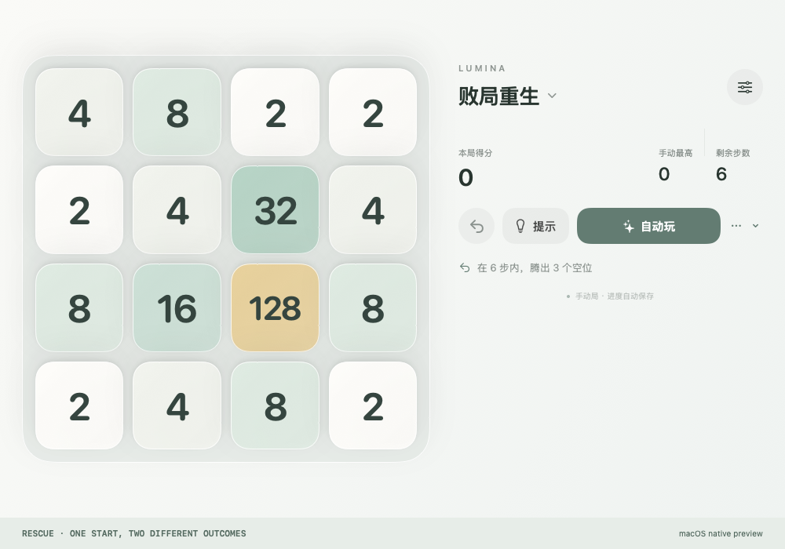
動図を再生 レスキュー：失敗する手と救済ルート MP4 · 動画プレイヤー 二つの結末を比較します。成功には出現後の空き三マスが必要。クラシック全局の録画ではなく、問題の実操作です。
GIF · MP4 · 7.58 s · PNG
デイリー：同じ日付で再開始
例の日付 2026-09-29 で三手動かし、最初から始め直します。
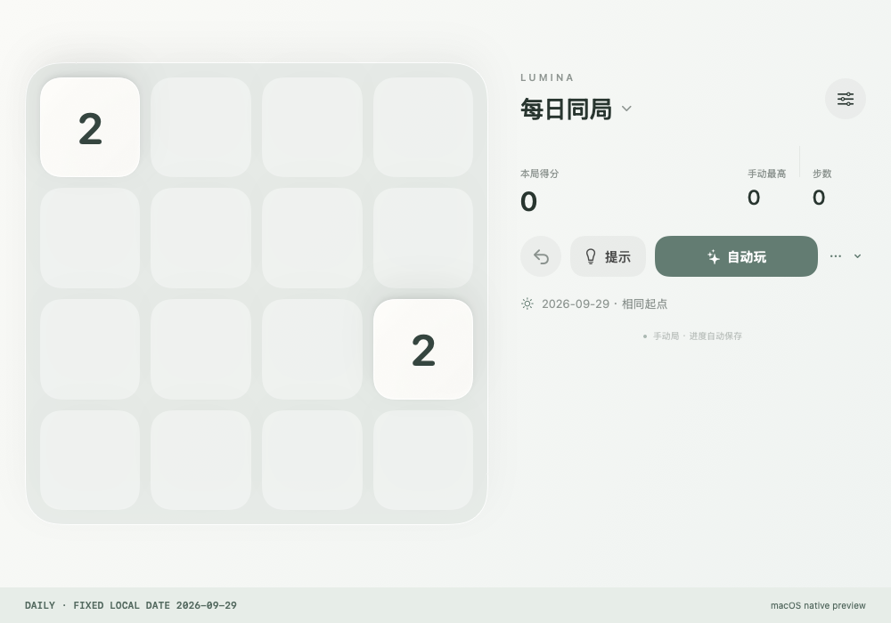
動図を再生 デイリー：同じ日付で再開始 MP4 · 動画プレイヤー 最初の二枚が元に戻ることを確認します。通信による同期ではありません。
GIF · MP4 · 5.83 s · PNG
スプリント：最後の三手
seed 42 の本物の局を 57 手目まで進め、残り三手と終了を収録します。
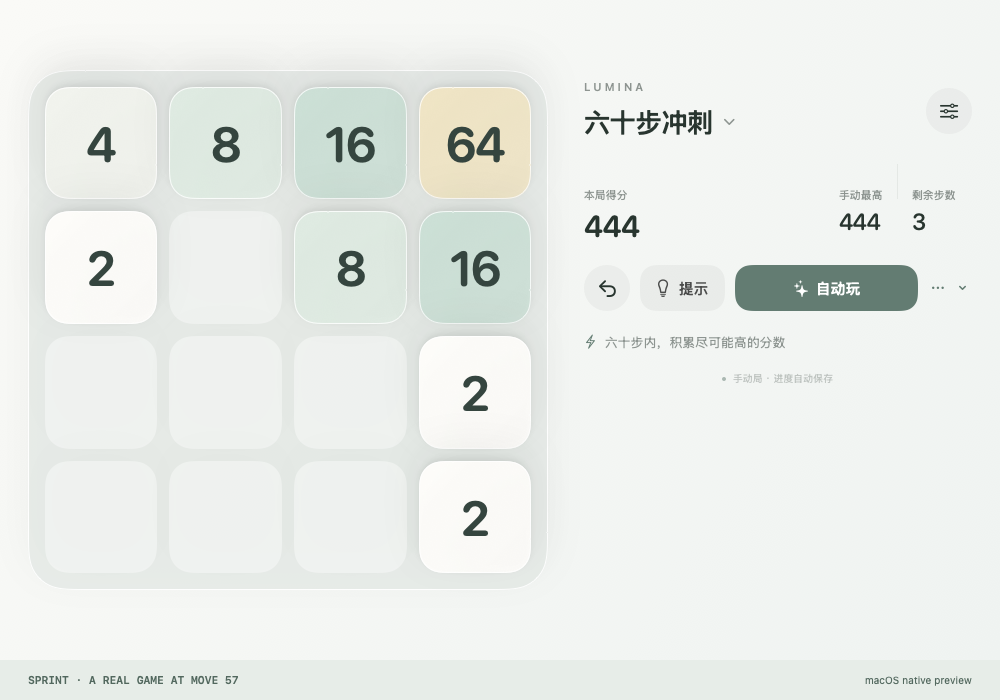
動図を再生 スプリント：最後の三手 MP4 · 動画プレイヤー 残りが 3 から 0 へ減ります。秒数制限ではなく、第 61 手はありません。
GIF · MP4 · 5.58 s · PNG
Media / 媒体 / メディア
十二問のパズルと三問のレスキュー解答
以下の十二章・三問の練習は、資源・初期盤面・経路をデスクトップ v12 と照合しています。ボタン位置は各版の操作章を参照してください。
まず自分で試してから読んでください。すべて初期盤面からのルートなので、対応する問題を最初から始めます。矢印は移動方向、0 は空白です。方向は翻訳で変わらないよう、同梱リソースから直接生成しています。
外部説明書の閲覧はアプリの外なので、解答を読んだことを自動判定してアシスト扱いにはできません。自力挑戦を大切にする場合は外部解答を避け、既知ルートの練習と初見の解法発見を区別してください。
パズル 01 · 借一步
目標 / 標準 / 上限: 64 / 2 / 3
2 8 8 16
4 4 2 16
4 8 8 0
16 4 4 32
ルート: ↑ ↑
パズル 02 · 转身
目標 / 標準 / 上限: 64 / 2 / 3
8 32 2 0
8 8 16 16
4 4 8 8
0 16 4 16
ルート: ← ↑
パズル 03 · 留白
目標 / 標準 / 上限: 128 / 3 / 4
2 2 64 32
8 16 16 16
16 0 0 4
32 16 8 4
ルート: → ↑ ←
パズル 04 · 折返
目標 / 標準 / 上限: 128 / 3 / 4
0 16 16 0
32 16 16 32
16 4 16 0
4 4 0 32
ルート: ↑ → ←
パズル 05 · 暗流
目標 / 標準 / 上限: 256 / 3 / 4
2 2 64 16
0 4 0 4
0 32 32 128
64 0 16 4
ルート: ← ↑ ←
パズル 06 · 挪一寸
目標 / 標準 / 上限: 256 / 4 / 5
16 32 32 32
16 4 0 16
4 0 32 64
64 64 0 32
ルート: ← ↑ ← ←
パズル 07 · 连锁
目標 / 標準 / 上限: 512 / 4 / 5
128 64 0 2
256 32 2 64
0 32 2 4
128 0 32 64
ルート: ↑ ↑ ← ↑
パズル 08 · 破局
目標 / 標準 / 上限: 512 / 4 / 5
4 64 64 128
0 2 128 4
32 64 64 0
64 0 0 64
ルート: ← ← ↑ ↑
パズル 09 · 回声
目標 / 標準 / 上限: 1024 / 4 / 5
4 256 0 256
128 256 64 128
64 64 64 0
256 4 64 2
ルート: ← ↑ → ↑
パズル 10 · 逆风
目標 / 標準 / 上限: 1024 / 5 / 6
4 4 128 2
64 0 512 64
128 256 128 256
0 64 4 256
ルート: ↑ ← ← ↑ ←
パズル 11 · 归位
目標 / 標準 / 上限: 2048 / 5 / 6
128 0 4 256
256 256 0 512
4 4 0 4
512 2 0 512
ルート: ← ↑ → ↑ ↑
パズル 12 · 最后一线
目標 / 標準 / 上限: 2048 / 5 / 6
256 0 256 0
256 128 512 256
256 128 256 128
2 128 512 256
ルート: ↑ ↓ ← ← ↑
内蔵レスキュー
六手以内に空きを三マス作ります。新タイル出現後に判定します。「元のルート」は移動不能になる比較例であり、推奨手ではありません。
一线生机
元のルート（失敗）: ←
救済ルート（成功）: → ↑ ↑
腾挪之间
元のルート（失敗）: ↓
救済ルート（成功）: ↑ ← ↑ ← ↑
逆转时刻
元のルート（失敗）: ↑
救済ルート（成功）: ← ← → ↓ ←
個人レスキューは開始盤面が異なり、共通の矢印解答はありません。その問題のヒントや比較リプレイを使ってください。
よくある質問・開発・検証
よくある質問
Mac はロビー、原生版は盤面から始まるのはなぜ？ v12 はモード選択、Native 1.0.1 はクラシックから開始します。入口が異なりますが、どちらもクラシックを先頭にしています。
Mac 用 exe は？ .exe は Windows 用、.command は Mac の起動スクリプトです。Python コードは共通で、実行環境は OS ごとに準備します。iPhone / iPad は別の Swift 工程です。
説明書は三言語なのにゲームは中国語？ 今回は説明書と README の三言語化で、ゲーム内言語切り替えを追加する変更ではありません。訳文にも実際のボタン名を残しています。
自動プレイなら必ず 32768？ 保証しません。時間制限・評価関数とランダムな結果があり、過去の高得点は特定の試行です。全端末・全版の保証ではありません。
携帯と PC のデイリーが違う？ 版、日付、操作順、取り消し、補助を確認してください。規則比較の成功は、全開始状態やセーブの互換性を意味しません。特に遠征の選択肢の並べ方は版によって異なります。
GIF が遅く見える？ 読みやすさと容量のため 12 fps で採取した教材です。実画面のフレームレート測定ではありません。MP4 を開くと再生操作ができます。
星や記録が予想と違う？ 補助使用、取り消し、最短手数、表示中のモードを確認します。現在局を取り消しても過去の最高記録は下がりません。
ソースと開発
パス
役割
game.py, air_ui.py, interface_base.pyデスクトップ起動と画面
engine.py, modes.py, persistence.py規則、モード保存、背景保存
ai.py, search_native.py探索と別プロセス
expedition.py, rescue.py, puzzles.py専用モードと解法
desktop_start.py, platform_paths.py, check_runtime.py起動、保存先、ロック、診断
tests/, validation/v12/デスクトップテストと証拠
iOS/Swift 原生工程
mobile/Touch Web 工程
docs/, README*.md全版ガイドと三言語入口
説明書単独 ZIP は文章、媒体、参照報告、生成ツールを含み、実行ゲームや完全な原生ソースは含みません 。Windows-with-docs ZIP は Windows ゲームと環境を含みますが、完全な iOS 工程は含みません。元のゲームルートが各版の工程と配布物をまとめた場所です。
デスクトップ環境を準備し、ゲームルートで実行します。
python -m unittest discover -s tests
python はゲーム用の実体に置き換えます。Mac は .venv/bin/python、Windows ソースは .venv\Scripts\python.exe です。ポータブル Windows では check-windows.bat を使います。Web は mobile/ 内で node --test tests/*.test.js、開発起動は python3 serve.py です。原生版のテスト・Xcode・実機確認は専用ビルド章を参照してください。
ゲーム全体の THIRD_PARTY.md、fonts/OFL.txt、Windows licenses/ を残します。苹方などシステム字体はローカルで読むもので、Windows 配布用にコピーしません。コードが読めることだけで、明示されていない再配布許諾を推定しないでください。
検証記録を区別する
保管された v12 報告は 90 テスト成功 、遠征六ステージ 6,098 点・123 手、実敗局からのレスキュー抽出、字体代替、Windows 静的確認を記録しています。以前の v12 の証拠であり、今回の説明書更新で新たに実施したハードウェア試験ではありません。
Native 1.0.1 の記録には 38 のコア／操作確認、5,760 回の混合操作 があります。Web にも独立した規則・ブラウザー確認があります。別の版の検証で代用はできません。
今回のリンク・アンカー、翻訳章、解答経路、GIF / MP4 の復号とフレーム数、配布資源、Windows 実行ファイル不変、個人セーブ不変の確認は文書 QA を参照してください。オフライン HTML のブラウザーによる外観・操作確認は未完了です。構造検査をクリック操作済みと表現していません。
問題報告の書式
版：Mac/Windows v12、Native 1.0.1、Touch v1
OS・端末・CPU：
導入方法・配布ファイル名：
モード・日付・章：
正確な再現手順：
期待した結果・実際の結果：
再現するか：
AI・取り消し・モード変更の有無：
エラー全文・画像・関連ログ：
セーブ調査前にはバックアップし、診断に提供してよいコピーだけ共有します。パスワードや署名証明書は不要です。端末と版を明記し、PC のキー問題と携帯のジェスチャーを混同しないようにしてください。